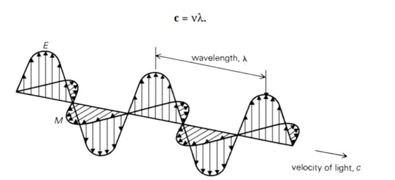
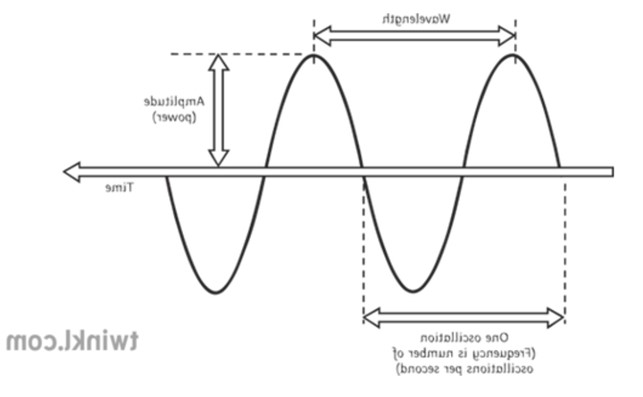
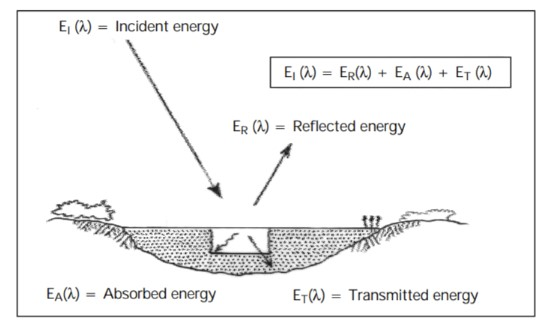
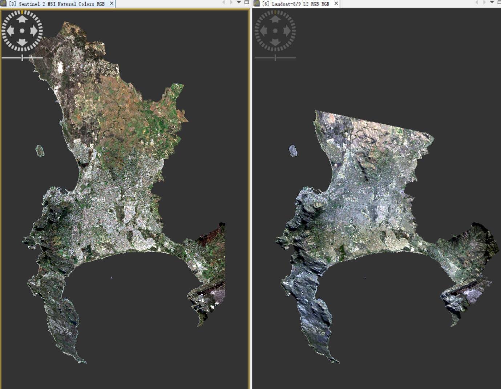
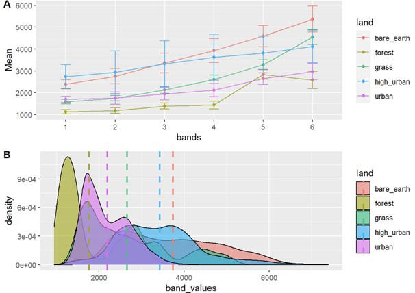
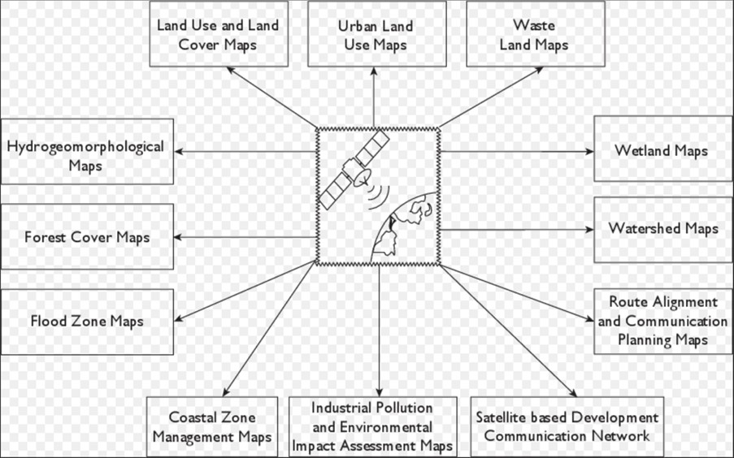
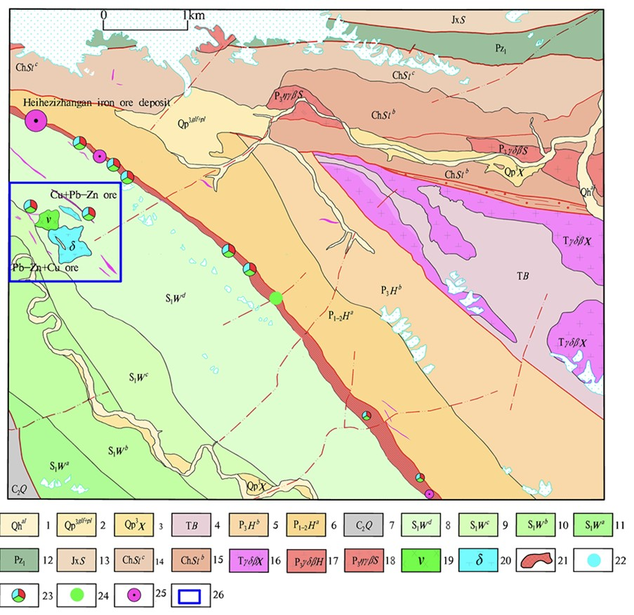

2 week1
2.1 summary
2.1.1 lecture
Remote sensing is acquiring information from a distance (NASA).
There are two types of sensors, passive and active. Passive sensors Detects reflected energy, which is in electromagnetic waves, from the sun. Human eye, camera, satellite sensor are passive sensors. Active sensors actively emit electromagnetic waves and then waits to receive. Radar, X-ray, LiDAR are active sensors.
C=velocity of light
λ=wavelength
v=frequency

oscillation vs wavelength

Electromagnetic radiation (EMR) may be absorbed by, transmitted through, and reflected by surface. It could also be scattered by particles in atmosphere.
Electromagnetic radiation (EMR): waves of an electromagnetic field
Radiant energy: energy carried by EMR waves
Radiant flux: energy per unit of time
Shortwave radiation: energy from the sun
Solar irradiance flux: energy (solar power) from the sun per unit area per unit time
Exitance/emittance flux: energy leaving a surface per unit area per unit time
There are three types of atmospheric scattering: Rayleigh (smaller than the wavelength), Mie (same size of wavelength) and non-selective (larger than the wavelength).
Synthetic Aperture Radar (SAR) can “see through clouds” and collect data at night.
In most cases remotely sensed data is raster.
Remotely sensed data and applications will vary based on the four resolutions: spatial, spectral, temporal, and radiometric. A spectral signature can be discrete (e.g. multi spectral) or continuous (e.g. hyper spectral). Lower the radiometric resolution the lower the quality of the image and possibility to differentiate features.
2.1.2 practice

Sentinel and Landsat product of Cape Town in South Africa

Mean and density of band values of the Sentinel
2.2 application
Remote sensing has a wide range of applications. Including but not limited to agriculture, forestry, geoogy, hydrology, sea ice, land cover and land use, oceans and coastal monitoring, atmosphere monitoring, meteorological parametere measured by remote sensing, developing online mapping services and other fields.
Ganesh and Kumar (2013) use this diagram to show some of the applications of remote sensing.

Fan (2020) applied IKONOS remote sensing image as the main data source, extracted ore-controlling factors and mineralization information by image enhancement method, and identified mineral resources. In the images synthesized by bands 3, 2 and 1, the copper mineralization zone presents a narrow strip pattern of gray, blue and blue. The lead-zinc mineralized zone presents a stripe pattern of grayish white, light grayish yellow, and tan tones. This successfully solved the problem of poor natural environment, inconvenient transportation and difficult field geological survey in the west of the West Kunlun Mountains.

2.3 reflection
Through this week’s lecture, I learned the difference between active sensors and passive sensors, some terms related to remote sensing and four resolutions of remote sensing data: spatial, spectral, temporal, and radiometric. For the practice session, I used remote sensing data from Sentinel and Landsat and visualized their band values.
I have learned that remote sensing is widely used in many fields. Remote sensing images, for example, can be used to explore for mineral resources.
This week is the introduction to the remote sensing course, and I believe that the future learning content will be very rich.